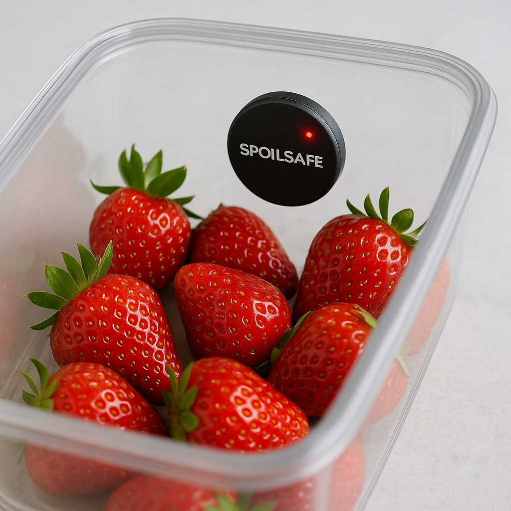

Product vision
See the future of your cold chain before spoilage happens
SpoilSafe's predictive platform transforms how distributors, transporters, and retailers manage freshness. Our machine-learning models forecast hours-to-spoil for every SKU, enabling teams to intervene proactively and protect margins before loss occurs.
freshness_report.txt

Bring continuous freshness visibility to your operations
We partner with culinary, facilities, and operations leaders to prove outcomes quickly and scale confidently.